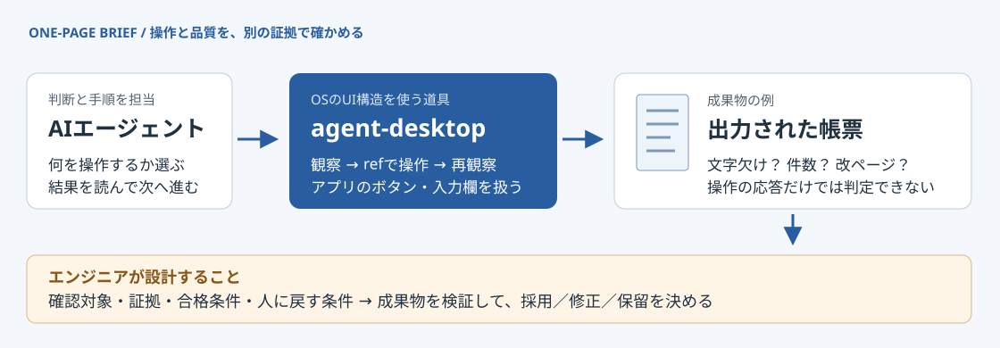

OBSERVE
画面の構造を読む
OSのアクセシビリティツリーから、ボタンや入力欄の情報をJSONで取得。
01 / 08 — AGENT-DESKTOP × SOFTWARE TESTING
Vercel Labsのagent-desktopは、画面の構造を読んでアプリを操作する道具。AIに作業を任せるとき、次に問われるのは「何を証拠に、結果を合格とするか」です。

任せること：ボタンや入力欄の観察・操作。設計すること：内容・見た目の検証と、人に戻す条件。
何が公開されているか
公式仕様 agent-desktopはCLI（コマンドで使うツール）とCライブラリです。AIモデルや自律的な判断ループは、呼び出す側のエージェントが担います。
OBSERVE
OSのアクセシビリティツリーから、ボタンや入力欄の情報をJSONで取得。
ACT
観察時に付いた参照番号 ref を指定して、クリックや文字入力を実行。
CONNECT
macOS・Windows・Linux向け。使える操作と権限の条件はOSごとに異なります。
直近の動き：変更履歴ではv1.0.0が2026年10月27日、v1.0.2が10月30日。v1.0.2のリリースにはVercel Labs移管に伴うリンク変更も含まれます。
これは変更履歴・リリースに記載された日付です。11月1日は本スライドの掲載日です。
操作対象をどう見つけるか
画像・座標を使う場合
画像の中のボタンを見つけ、画面上の座標を指定する考え方。
agent-desktopの基本経路
役割・名前・参照番号を使い、「印刷という名前のボタン」を対象にする。
{
"role": "button",
"name": "印刷",
"ref_id": "@s8f3k2p9:e8"
}説明用の要素例。実際のrefは取得したsnapshotに属します。
構造を読めても、画面の見た目の正しさは別の確認が必要です。スクリーンショット機能も備えており、構造と画像は用途に応じて組み合わせられます。
出典：[4] FAQ[5] Concepts ／ 左の座標方式は比較のための一般的な概念図です。
観察した情報を、使い続けない
1 / SNAPSHOT
対象アプリの要素とrefを受け取る。複数ウィンドウなら対象を絞る。
2 / ACTION
そのsnapshotの参照でクリック・入力などを指示する。
3 / OBSERVE AGAIN
もう一度取得し、期待した画面や値になったか呼び出し側が確かめる。
STALE_REF（古い参照）や AMBIGUOUS_TARGET（対象が曖昧）を返す仕組みがあります。
エラーを受けたら無条件に連打せず、再試行の可否と現在の状態を確認。業務上の正しさまで、この仕組みが保証するわけではありません。
AIによるテストに使うなら
本記事の提案 架空の帳票アプリで考えます。テスト用データを入力し、プレビューやPDF出力を作る操作をAIに任せる想定です。
操作についての確認
期間を指定できた。印刷ボタンを押せた。出力完了の表示を確認できた。
証拠：実行ログ、前後のUI状態、出力ファイルの存在。
成果物についての確認
件数・合計が一致する。長い名前が欠けない。改ページしても見出しや明細が読める。
証拠：期待値との照合、PDF・画像の比較、必要箇所の目視。
操作の成功は、品質の判定に使う
証拠の一つ。
仕様の根拠：[1] 操作後の再観察[5] 観察と証拠の区分 ／ 帳票の検証項目は記事の提案例。実機での効果測定は行っていません。
導入前に確認する条件
macOS
アクセシビリティ権限が必要。画面取得には画面収録の許可も確認します。
Windows
同じ権限レベルのアプリが基本。配布バイナリは未署名で、導入経路や端末ポリシーによって制約があります。
Linux
GUIセッションとAT-SPIが必要。X11とWaylandでは、入力やウィンドウ制御の対応が異なります。
アプリが必要な要素を提供しているかが前提。対象の画面で、欲しいボタン・値が取れるか確認します。
snapshot、クリップボード、スクリーンショットやトレースには私的な内容が入り得ます。テスト用データを使い、保存先と共有範囲を決めます。
エンジニアが用意する検証設計
本記事の提案 まずは対象アプリ・帳票・入力データを一つに限定。正常な例と、文字欠けなどの不具合を含む例を用意します。
| 決めること | 帳票テストの例 |
|---|---|
| 確認対象 | 件数、合計、長い文字、最終ページ。何を見るかを列挙する。 |
| 残す証拠 | 入力条件、期待値、操作ログ、出力PDF、比較結果を対応づける。 |
| 合格条件 | 件数・合計は期待値と一致。重要な文字が欠けず、定めた表示範囲に収まる。 |
| 人に戻す条件 | 対象が曖昧、結果を取得できない、比較が判断不能、再試行の結果が不明な場合。 |
考察の基礎：[6] エラーと再試行の情報[4] 記録に含まれるデータ ／ この表と評価手順は記事の提案で、製品の保証や実測結果ではありません。
まとめ・公式出典
操作を担うAIの基盤が進むほど、
「正しい」と判断できる仕組みが必要になる。
以下の公式資料を2026年11月1日（JST）に確認。直近リリースはv1.0.2、機能説明は確認時点のmainの文書を参照しています。対象アプリでの動作・工数削減効果は未検証です。